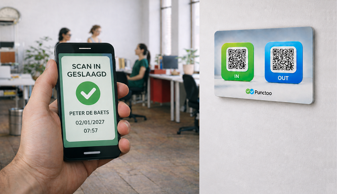

Arbeidstijdregistratie vanaf 2027

Vanaf 1 januari 2027 wordt tijdsregistratie voor ondernemingen een wettelijke verplichting.
De regelgeving focust niet alleen op registratie van start- en stoptijden. Als onderneming moet je ook transparantie rond overuren kunnen aantonen, op basis van een betrouwbaar en controleerbaar systeem, waarbij eveneens aandacht is voor een correcte en proportionele verwerking van persoonsgegevens.
Voor KMO’s is het aangewezen om te kiezen voor een oplossing die aansluit bij hun werking, gebruiksvriendelijk is en de administratieve last tot een minimum herleidt.
Een pragmatische benadering
Systemen die te complex zijn of sterk afhankelijk van planning, sluiten niet altijd aan bij de realiteit op de werkvloer.
Ook app-gebaseerde oplossingen brengen bijkomende aandachtspunten met zich mee, onder meer op vlak van gegevensverwerking en de afhankelijkheid van private toestellen.
Vanuit deze pragmatische benadering werd Punctoo ontwikkeld.
Eenvoudige registratie zonder app
Medewerkers registreren hun prestaties via een eenvoudige scan (IN en OUT), zonder dat hiervoor een app of installatie nodig is.
Elke periode tussen IN en OUT wordt automatisch afgetoetst aan het arbeidskader of de referentietijd, wat zorgt voor transparantie rond overuren en duidelijke rapportering.
De gegevens worden daarbij bewaard op een beveiligde server.
Waarom vandaag al bij stilstaan?
Hoewel de verplichting pas ingaat in 2027, kan het zinvol zijn om tijdig na te denken over de aanpak binnen jouw onderneming.
Dit laat toe om eventuele aanpassingen gefaseerd door te voeren en interne processen op punt te stellen.
Daarnaast biedt een duidelijke tijdsregistratie ook vandaag al meer inzicht en transparantie in de werking.
Zoek je een eenvoudige digitale prikklok zonder complexe planningsoftware?
Start met Punctoo